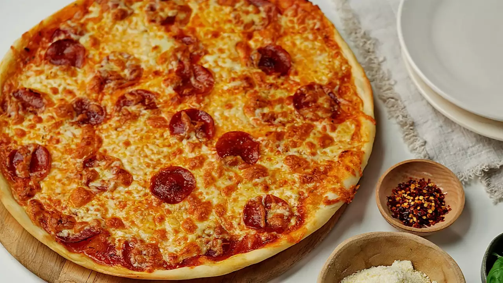

Thin-Crust Pizza Dough

Description
An easy to make pizza crust using ingredients that you likely have on hand.
This crust only takes about 15 minutes to make, and once topped, will yield 4 servings.
Ingredients
- One teaspoon of active dry yeast
- All-purpose flour
- Sugar
- Water
- Salt
Steps
- Activate yeast with sugar and water.
- Make the dough.
- Knead the dough.
- Roll the dough into a circle.
- Top as desired.
- Bake at 500 degrees F until golden, 8-10 minutes.
Credit for this recipe goes to Lynda Q on allrecipes.com.